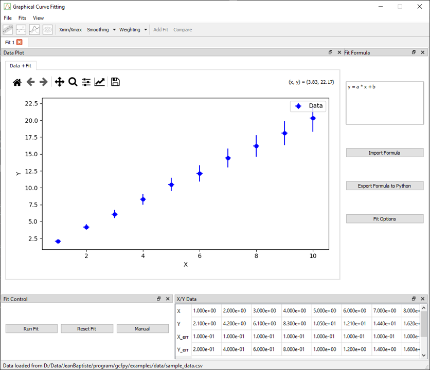
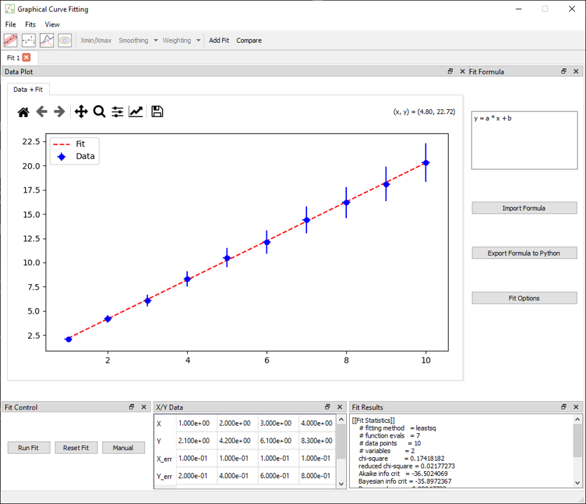

Basic 1D Fit
This tutorial walks through the essential steps to perform a basic 1D fit using the Graphical Curve Fit for Python application. It is designed for first-time users to become familiar with the core workflow: loading data, defining a model, fitting, and analyzing the results.
Step 1 – Load Example Data
- Launch the application:
bash gcfpy - Go to
File > Load Data - Select the file:
examples/data/linear.csv - Two docks will appear:
- X/Y Data: showing the raw data
- Fit Control: tools to launch and manage fits

Step 2 – Enter a Fit Formula
A formula is automatically added to the fit formula dock:
y = a * x + b
The application automatically extracts the parameters (a, b) and sets them up for fitting.
You may also use built-in functions like sin, exp, log, and physical constants such as pi, e, h, etc.
Step 3 – Configure Fit Options (Optional)
Open the Fit Options dialog if you want to:
- Set initial guesses for
aandb - Define bounds
- Choose a different optimizer (default is
leastsq)
This step is optional – default values will work for most basic examples.
Step 4 – Run the Fit
Press the Run Fit button in the Fit Control dock
Upon completion, the following are updated:
- Results Dock: fitted values, standard errors, and metrics (AIC, BIC, RMSE, etc.)
- Plot: displays the best-fit line
